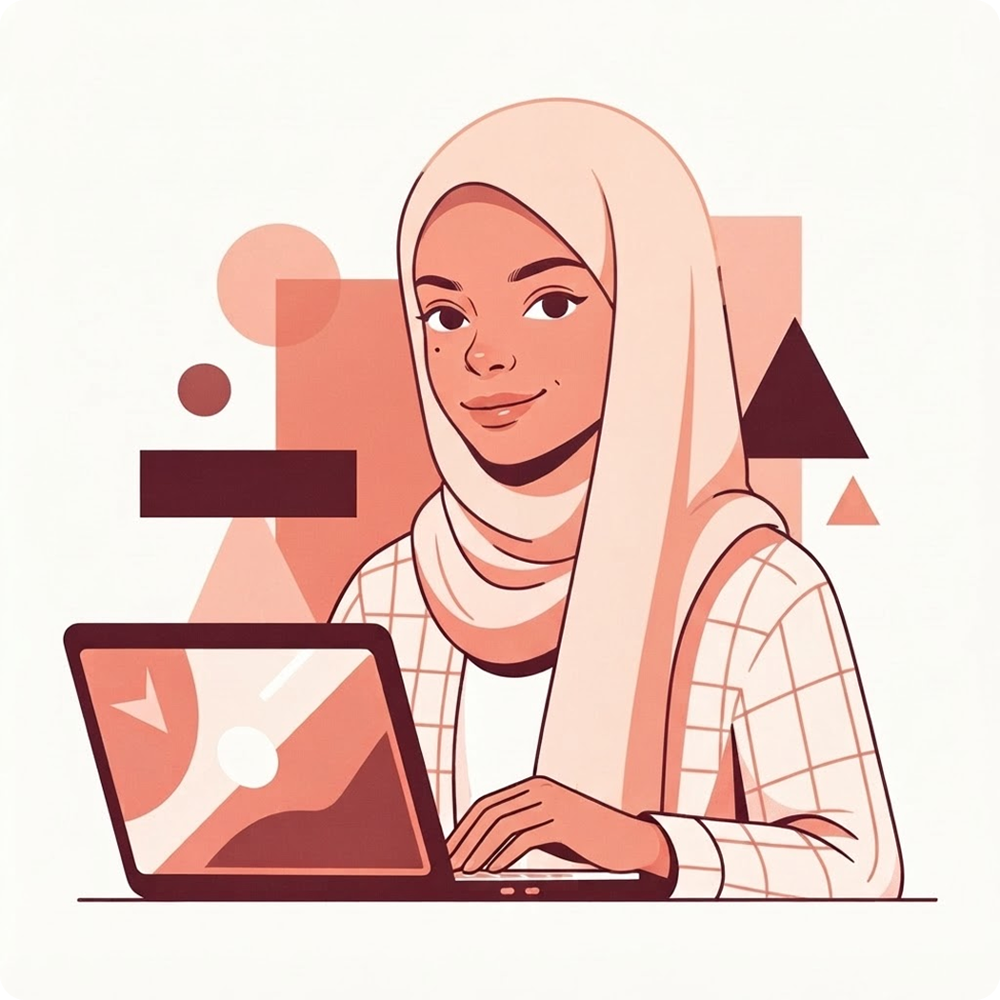

Behind the pixels
Ich bin Hiba, Mediendesign-Studentin mit einem breiten Blick auf digitale Gestaltung. Design ist für mich kein Selbstzweck, sondern ein Werkzeug, das Ideen sichtbar, zugänglich und erlebbar macht. Ich arbeite interdisziplinär und bringe in jedem Bereich dasselbe Engagement ein, ob im Bereich UX/UI Design, Frontend Development, Grafikdesign oder Cross Media. Durchdachte Design-Systems und eine starke Markenidentität sind für mich das Herzstück jeder erfolgreichen Kampagne.
Besonders fasziniert mich die Arbeit mit 3D-Visualisierungen, vor allem wenn es darum geht, komplett neue Welten zu erschaffen und Räume zum Leben zu erwecken.Mit Fotografie bringe ich meine ganz persönliche Vision zum Ausdruck und zeige, wie ich die Welt wahrnehme und was mich darin bewegt.
Barrierefreiheit nach WCAG 2.1, durchdachte Informationsarchitektur und nutzerzentriertes Denken sind für mich keine Extras, sondern die Grundlage jedes Projekts.

Skills & Softwares
- UX/UI Design
- Wireframing & Prototyping
- Responsive Webdesign
- Frontend Development
- Design Systems
- Branding & Identity
- 3D Modeling
- Photography
- Adobe Creative Suite
- Figma
- HTML5 / CSS3 / JavaScript
- Git / GitHub
- VS Code
- Blender